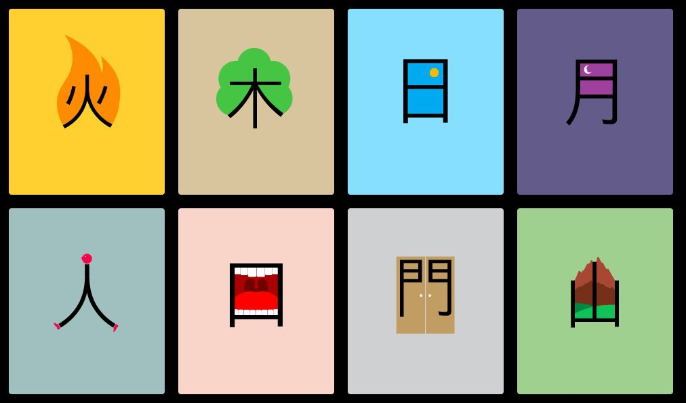
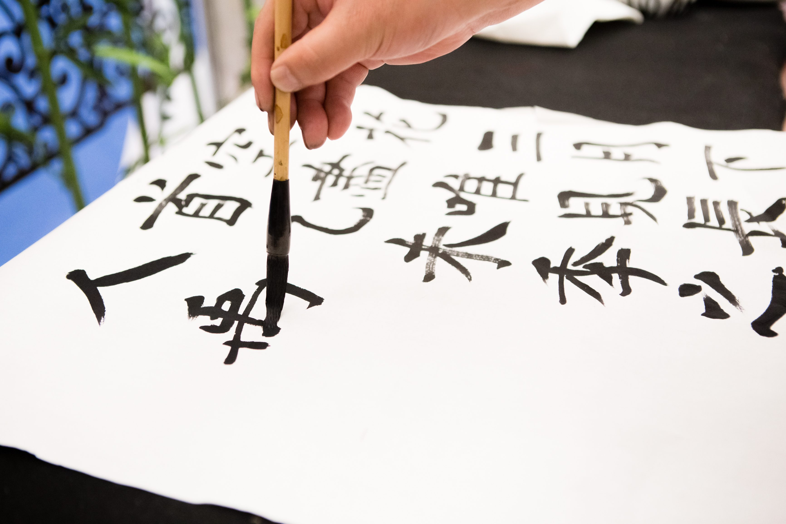
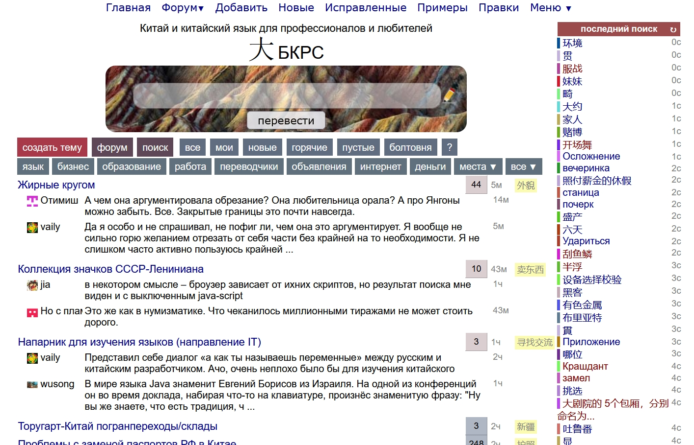
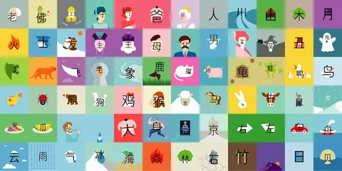

Изучать ключи(радикалы)
Изучение ключей поможет лучше понять структуру и значение иероглифов.
Изучение ключей поможет лучше понять структуру и значение иероглифов.
Создавать собственные ассоциации и мнемонические образы для каждого иероглифа. Например, можно связать иероглиф с предметом или действием, которое он обозначает.
Письменная практика поможет закрепить знания и улучшить навык письма иероглифов.

Канал бывшего школьного учителя и переводчика. Из роликов про изучение китайского с нуля можно узнать основы фонетики и грамматики. В отдельной серии уроков преподаватель разбирает иероглифы на составные части — графемы. Например, в слове «смотреть» (看) их две: «рука» (手) и «глаз» (目). Тем, кто хочет заговорить на китайском, пригодится подборка роликов с простыми фразами. Автор канала подскажет, как общаться в бытовых ситуациях: рассказывать о себе, благодарить и поздравлять с днем рождения. А когда захочется развлечься, можно посмотреть разбор мультфильмов, песен или мемов.
Автор канала Анна Кузина — переводчик-синхронист и китаевед. Из ее видео можно узнать, зачем в Поднебесной постоянно пьют горячую воду, кем работают в стране без знания языка и почему некоторые местные спят в пуховиках. Другие ролики посвящены лайфхакам для изучающих язык. Зрители узнают, как запоминать китайские слова, овладеть правильной интонацией и прокачать произношение. В коротких вертикальных видео Анна учит прописывать иероглифы, делится полезными выражениями и разыгрывает диалоги.
Канал для тренировки навыков аудирования. Ведущая читает вслух истории на китайском, тщательно проговаривая каждое слово. Темы рассказов разные: от бытовых диалогов до любовных разборок. Для удобства видео разделены по уровням сложности. Кроме того, на канале есть короткие подкасты, в которых говорят на бытовые темы. Их удобно включать фоном, параллельно занимаясь своими делами.
Полезный ресурс для тех, кто хочет научиться писать и читать иероглифы. На канале дают уроки каллиграфии и объясняют значение китайских слов. Есть отдельные серии видео, посвященные названиям стран, именам, общественным знакам. Анализируя почерк преподавателя, можно понять, как меняются иероглифы при написании от руки. Многократное повторение за автором поможет быстрее запомнить новые слова и обучиться скоростным техникам письма.

Полезный ресурс для тех, кто изучает китайский. Здесь слушают скороговорки на иностранном языке, узнают значение незнакомой лексики и смотрят, как часто она используется. Но стоит иметь в виду, что написать новую словарную статью или дополнить существующую может каждый, поэтому перевод не всегда бывает точным. Важные вопросы пользователи обсуждают на форуме — там пишут о том, как получить рабочую визу в Китай или где найти преподавателя — носителя языка. В отдельном разделе размещают объявления: например, о поиске сотрудников со знанием китайского или продаже учебников.

Приложение, которое помогает запоминать иероглифы за несколько минут в день. Обучение проходит в игровой форме и разделено на короткие уровни. Сначала пользователю показывают ассоциативные рисунки, а затем — иероглифы с вариантами перевода и транскрипцией. Для закрепления материала предусмотрены тесты. В отдельном разделе авторы собрали познавательные статьи, видео и подкасты. Заглянув туда, можно выучить новую лексику, разобраться в написании иероглифов и узнать интересные факты о Китае.